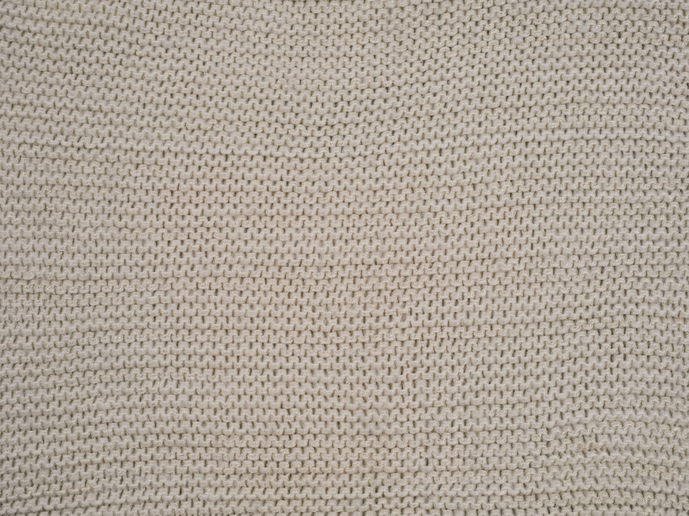

Tramma, camisetas básicas premium
Não foi possível carregar os produtos
Verifique sua conexão e tente de novo.
Compre por modelo
Ver todas as camisetas
Ficha técnica
O que faz uma camiseta durar
Toda peça mostra gramatura e composição. Você compara antes de comprar, como faria com qualquer produto técnico.
- Gramatura
- 140 a 280 g/m²
- Fio
- Algodão Pima e egípcio, fio longo
- Costura
- Dupla na barra e nas mangas
- Gola
- Ribana com elastano, não abre
Recomendados para você
Vistos recentemente
Na vida real
Feitas para o dia a dia
Sobre a Tramma
Camiseta básica, levada a sério
A Tramma faz um produto só, e faz com cuidado: fio longo, malha estável e costura que aguenta lavagem. Em vez de coleção nova a cada estação, a gente melhora as mesmas peças.
Conheça a Tramma